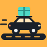

오는 길에
운전자 도착에 맞춰요
연결 중
주문할 때가 되면 소리와 진동으로 알려드려요.
운전자 출발 전
운전자가 내비 목적지를 정하고 출발하면 여기에 도착 시각이 떠요.
남은 시간
--
출발도착
① 배달 타이밍 설정 전
시킬 메뉴를 적어 두면, 운전자 도착에 딱 맞는 순간에 "지금 주문하세요"라고 알려드려요. 주문은 평소 쓰는 배달앱으로 하시면 돼요.
운전자가 정체를 만나거나 어디를 들르면 알림 시각도 자동으로 바뀌어요.
지금 주문하세요!
평소 쓰는 배달앱에서 을(를) 주문한 뒤 눌러 주세요.
주문
운전자 도착
음식 도착
눌러 주시면 실제 걸린 시간을 기록해서 다음엔 더 정확하게 맞춰요.
② 오는 길에 부탁하기
운전자가 출발하면 경로 근처 가게를 골라 부탁할 수 있어요.
'+분'은 들르면 늘어나는 거리로 계산한 대략적인 시간이에요. 운전자가 수락하면 실제 도착 시각을 바로 알려드려요.
운전자는 주행 중에 화면을 만지지 않아요. 부탁은 정차했을 때 한 번 눌러 수락하거나 거절해요.